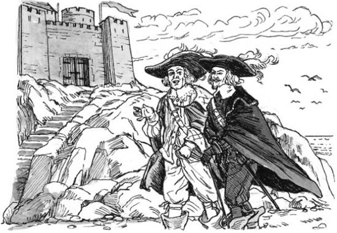
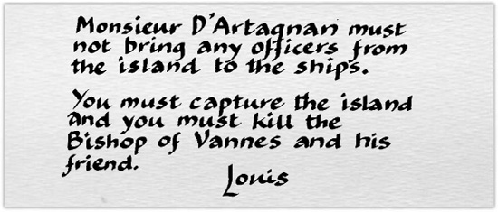
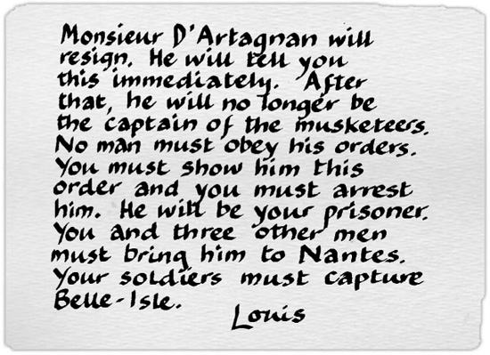

12
Belle-Isle
Listen to Part 1:
Aramis và Porthos đang đi dạo trên bãi biển ở Belle-Isle. Bãi biển ở gần pháo đài.

‘Aramis, làm ơn ngồi xuống,’ Porthos nói. ‘Ngồi xuống và kể cho tôi nghe đi. Tại sao chúng ta lại ở đây? Tại sao —?’
‘Porthos, kia là cái gì, ở bên kia?’ Aramis đột nhiên hỏi. Anh ta chỉ ra ngoài biển.
‘Tàu kìa!’ Porthos nói. ‘Không phải một — mà là năm, sáu, bảy chiếc tàu!’
‘Porthos,’ Aramis vội vàng nói. ‘Đó là tàu của nhà vua. Họ đang chở quân đến đây. Họ sẽ tấn công hòn đảo. Hãy nói cho dân đảo biết về những chiếc tàu đó. Họ phải ra lấy súng. Họ phải chuẩn bị sẵn sàng!’
‘Tôi sẽ làm ngay bây giờ, Aramis,’ Porthos nói. ‘Nhưng sau đó, anh phải trả lời câu hỏi của tôi đấy.’
Anh ta đi về phía pháo đài.
Aramis nhìn những chiếc tàu đang đến gần hơn. Sau đó, anh ta nhìn thấy một chiếc thuyền nhỏ rời khỏi một trong số các tàu đó. Những chiếc tàu dừng lại và chiếc thuyền nhỏ đi về phía hòn đảo. Vài phút sau, chiếc thuyền đến bãi biển và một chàng trai nhảy ra khỏi thuyền. Aramis biết chàng trai đó. Đó là một ngư dân ở Belle-Isle.
‘Jonathan,’ Aramis nói với ngư dân trẻ. ‘Ai đã phái anh đến đây?’
Listen to Part 2:
‘Binh lính nhà vua đã phái tôi đến,’ Jonathan nói. ‘Họ bắt tôi và bạn tôi khỏi thuyền của chúng tôi. Đội trưởng của lính ngự lâm Vua đã cho tôi lá thư này gửi cho ngài.’
‘D’Artagnan!’ Porthos nói. ‘Bạn của chúng ta!’
Aramis đọc lá thư.
‘Có chuyện gì vậy?’ Porthos hỏi.
‘Không có gì cả, bạn tôi,’ Aramis nói. ‘Jonathan, anh đã nói chuyện với ngài D’Artagnan chưa?’
‘Có thưa ngài,’ Jonathan nói.
‘Ông ấy đã nói gì với anh?’ Vị Giám mục hỏi.
‘Ông ấy đã nói, “Đưa Giám mục Vannes và người bạn của ông ấy đến tàu này. Tôi phải nói chuyện với họ.” Các ngài sẽ đến chứ?’ Jonathan nói.
‘Chúng tôi sẽ không đi với anh,’ Aramis nói. ‘Hãy trở về tàu. Nói chuyện với đội trưởng. Ông ta phải đến hòn đảo. Chúng tôi sẽ nói chuyện với ông ta ở đây. Ông ta phải đến một mình.’
Listen to Part 3:
Chàng trai trẻ quay trở về thuyền của mình và Porthos và Aramis bước lên các bậc thang đá của pháo đài.
‘Mình chẳng hiểu gì cả!’ Porthos nói.
‘Bạn sẽ sớm hiểu thôi,’ Aramis trả lời.
‘Bạn của tôi, tôi đã cố gắng giúp đỡ một người đàn ông trẻ,’ Giám mục Vannes nói. ‘Tôi muốn ông ta thay thế vị trí của Vua Louis. Nhưng Louis biết về âm mưu của tôi. Giờ thì chúng ta đều là kẻ thù của nhà vua.’
‘Ồ!’ Porthos nói. ‘Đây là tin không vui rồi.’
‘Đừng lo lắng, Porthos,’ Aramis nói. ‘Chúng ta đang gặp nguy hiểm, nhưng chúng ta sẽ thoát khỏi rắc rối này. D’Artagnan sẽ giúp chúng ta.’
‘Mình không lo lắng về nguy hiểm,’ Porthos nói. ‘Nhưng mình không thích cụm từ “kẻ thù của nhà vua”. Nhà vua muốn mình trở thành công tước!’
‘Nhà vua khác muốn anh trở thành công tước,’ Aramis nói.
‘À! Cuối cùng mình cũng hiểu rồi,’ Porthos nói. ‘Và giờ thì mình là kẻ thù của Vua Louis.’
đã bày ra âm mưu. Tôi muốn có người giúp đỡ. Tôi không nói với anh về âm mưu đó, nhưng tôi đã nhờ anh giúp đỡ. Anh đã nhớ đến lời hứa của chúng ta, “Tất cả vì một, một vì tất cả”, và đi cùng với tôi. Nhà vua sẽ hiểu điều đó.’
Listen to Part 4:
‘Nhìn kìa!’ Porthos nói. ‘Có ai đó đang đến từ một trong những con tàu. Là D’Artagnan!’
‘Nhà vua nghi ngờ tôi,’ ông ta nói với họ. ‘Chúng ta phải rất cẩn thận. Hai người là những người bạn thân nhất của tôi. Nhà vua biết điều đó. Ông ta sẽ nghĩ, “D’Artagnan sẽ cố gắng giúp bạn của mình. Họ sẽ cố gắng trốn thoát và ông ta sẽ không ngăn cản họ.” Nhà vua muốn tôi giết hai người. Nhưng tôi sẽ không làm vậy. Hai người phải nói chuyện với nhà vua. Hai người có thể đến gặp nhà vua ngay bây giờ không?’
‘Anh có đi cùng tôi không, bạn của tôi Porthos?’ D’Artagnan hỏi.
‘Vậy thì tôi có một vài kế hoạch khác,’ D’Artagnan nói. Ông ta nói chuyện với bạn bè của mình thêm vài phút nữa. Sau đó, ông ta quay trở lại thuyền của mình.

D’Artagnan đi thuyền trở về tàu của mình và ông ta nói chuyện với lính ngự lâm của mình.
‘Các quý ông,’ ông ta nói với họ. ‘Tôi đã đến Belle-Isle. Có rất nhiều người đàn ông có súng trong pháo đài. Chúng ta phải chiếm lấy hòn đảo, nhưng sẽ không dễ dàng.’
‘Belle-Isle thuộc về bá tước Fouquet,’ D’Artagnan nói. ‘Fouquet không có trên đảo. Hôm qua, tôi đã bắt giữ ông ta. Nhưng những người trên đảo không biết điều đó. Họ không phải là những người thông minh, nhưng họ là người của Fouquet. Họ yêu ông ta. Họ sẽ chiến đấu vì ông ta. Họ sẽ không trao đảo của ông ta cho chúng ta. Tôi sẽ đưa hai sĩ quan chỉ huy của pháo đài đến tàu này. Họ là những người thông minh. Tôi muốn nói chuyện với họ. Chúng ta sẽ nói với họ, “Bá tước Fouquet là tù nhân. Đây là hòn đảo của nhà vua.” Họ sẽ gửi một tin nhắn cho những người trong pháo đài. Sau đó, chúng ta sẽ đưa hai người đàn ông đó trở lại đất liền.’
‘Đây là lệnh của nhà vua gửi cho ngài, thưa ngài,’ chàng nói. ‘Xin hãy đọc chúng.’

Listen to Part 5:
D’Artagnan nổi giận. ‘Nhà vua đã không trao lệnh bí mật cho tôi,’ ông ta nghĩ. ‘Ông ta trao chúng cho một người lính khác.’
Chàng lính ngự lâm trẻ lại tiến lên phía trước. Anh ta đưa cho D’Artagnan một tờ giấy khác. Vị đội trưởng đọc tờ giấy. Khuôn mặt ông ta trở nên nhợt nhạt.

<p class="bodytext>Mười phút sau, D’Artagnan đã ở trên một con tàu khác. Ông ta nghe thấy những tiếng chiến đấu đầu tiên từ Belle-Isle. Và một giờ sau, con tàu đến bờ đất liền.Mục lục
- Trang tiêu đề
- Trang bản quyền
- Mục lục
- Ghi chú về tác giả
- Ghi chú về câu chuyện này
- 1 Nhà ngục Bastille, Paris
- 2 Người tù
- 3 Bảo tàng Louvre, Paris
- 4 "Người sẽ trở thành một vị vua vĩ đại"
- 5 Ngôi nhà lớn tại Vaux
- 6 "Ta là vua của nước Pháp!"
- 7 Louis và Philippe
- 8 Fouquet biết được bí mật
- 9 Âm mưu của vị giám mục
- 10 Hai anh em
- 11 Cuộc gặp gỡ tại Nantes
- 12 Belle-Isle
- 13 Vượt ngục
- 14 Người lính ngự lâm cuối cùng